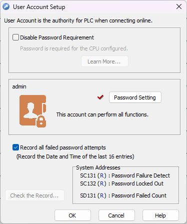
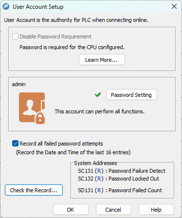

Topic: CL279

| User Account Setup |
Topic: CL279
|
With Version 3.0 and later, the CLICK PLUS PLC ( and Click Ethernet PLCs) ship from the factory with a default username and password. (The default password is "click".) When you connect to the CLICK for the first time from the software the default password will be required.
A single 'admin' user account exists on the CLICK platform. Either the project must have a password configured for any CLICK CPU with Ethernet capabilities or the password requirement must be disabled (only CLICK Ethernet and C2-01CPU and C2-01CPU-2 PLCs) before the project can be downloaded to the PLC. Keeping the password requirement enabled helps greatly reduce the chances of malicious software taking control of the PLC with easy-to-guess or publicly disclosed default login credentials. The User Account Setup dialog guides you through setting up a strong password and monitoring password activity. This dialog opens when creating a new project, if a CPU with network capabilities is selected, and can also be accessed at any time from the User Account Setup menu option.
|
|
Warning: Make sure you remember your Password. If you forget your Password you will not be able to access the CPU. You can use Reset to Factory Default to erase the Password. However, this erases the Entire Project file. Therefore, you will have to download a project file again. |
|
ALL CLICK Ethernet PLCs and CLICK PLUS PLCs without WLAN / Bluetooth Ports (C2-01CPU and C2-01CPU-2)
CLICK PLUS with WLAN / Bluetooth Ports (C2-02CPU, C2-02CPU-2, C2-03CPU, and C2-03CPU-2)

Disable Password Requirement: Selecting this checkbox allows access to the PLC without entering a password. This feature is good during development when connecting to the PLC often. But it is not recommended that the password requirement feature is disabled when the system is deployed. Doing so increases the chances of malicious software taking control of the PLC.
Password Setting: Opens the Password Setup dialog. The password must be set for any CPU with the possibility of network connection, whether or not the connection is used.
Record all failed password attempts: Enable this checkbox to maintain a record of unsuccessful password entry attempts.
Check the Record: Display the log of the most recent 16 password attempts, if connected to a CPU that has been set to record.
System Addresses: Read-only system registers hold password failure status values.
The C2-02CPU, C2-02CPU-2, C2-03CPU, and C2-03CPU-2 PLCs REQUIRE a password to be setup before a project can be transferred. Please see Cybersecurity Requirements for more information.

Disable Password Requirement: Disabling the password for PLCs with WLAN / Bluetooth Ports is not allowed in accordance with current cybersecurity standards.
Password Setting: Opens the Password Setup dialog. The password must be set for any CPU with the WLAN / Bluetooth before the project can be transferred.
Record all failed password attempts: This setting is enabled by default and cannot be changed
Check the Record: Display the log of the most recent 100 password attempts, only available when connected to a CPU.
System Addresses: Read-only system registers hold password failure status values.
With each wrong password attempt you will see GUI 132 Error "Login failed. The User Name or Password are incorrect."
After 3 wrong password attempts you will see GUI 133 Error "Password Lockout: You can not enter a password again for %s seconds." This delay increases with each failed attempt.
Password Setup
Failed Password Attempt Record
Cybersecurity Requirements